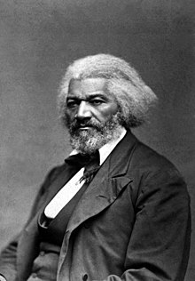

This site focuses on three major themes from recovered texts on One More Voice:
finding one’s voice through poetry and public speaking, exploring the dangers of idol worship, and revealing hidden historical figures through found letters of correspondence.
These themes are important to investigate because they primarily focus on the early black American experience through the words (both oral and written) from voices traditionally silenced or forgotten as well as those who are now household names and those who enjoyed such a status in their own lifetimes. They also spotlight the fears and religious changes before, during, and after white colonialism/colonization of Africa and the spread of Christianity among slaves, free men and women, and those who interacted with America, pointing out hypocrisy and irony. Most importantly, they take care to lift up the words and lives and experiences of traditionally ignored, erased, forgotten, or misrepresented people of color through a more modern and person-first lens. It is important to note that this is an ongoing project with many contributors, started as a graduate course assignment, so if you would like to contribute or attribute any of the words or labor, please do not hesitate to join us on our journey to bring these words and the people behind them to light.
The Word and the Word Project Development 